TOP 5 TOURIST SPOTS IN ANTIPOLO
(Discover the beauty of Antipolo City)
History of Antipolo
Long ago, Antipolo's slopes were shaded by towering tipolo trees, which gave the town its name. Antipolo is known as the "Pilgrimage Capital of the Philippines."
It's a destination for pilgrims, especially during May, when people devote themselves and join the Alay Lakad tradition, walking to the Antipolo Cathedral. Over the years,
Antipolo continued to grow its reputation. Even during the American period, travelers sought its cool climate and breathtaking views, a welcome retreat from the
scorching heat of Manila. And then there was Hinulugang Taktak, the waterfall whose steady flow has provided its wonder all through generations. In 1998, Antipolo
was finally named as a city. It was no longer just a tranquil place for pilgrims to visit; it was now a busy center of faith, history, and progress. History pours like its
waterfalls and rises like its hills in Antipolo, a city rich in nature, devotion, and untold stories.
Antipolo Cathedral
View LocationThe Antipolo Cathedral — formally the International Shrine of Our Lady of Peace and Voyage. Recently, in 2024, the cathedral was officially recognized by the Vatican — becoming the first Marian International Shrine in Asia. It is a major pilgrimage location, and millions of devotees visit this destination. People go to church, and it's a natural part of our life cycle. It's a habit for the people to go to church every Sunday weekend — they go to church to pray, ask for forgiveness, give thanks, and feel the presence of the Lord. So if you're set on a spiritual journey, Antipolo Cathedral is a must-visit destination you should go to.
Gallery
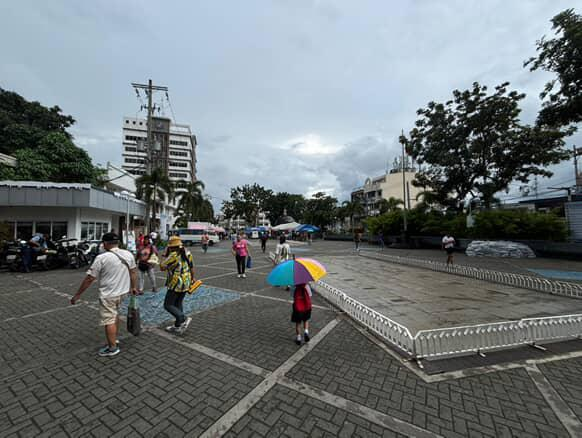
Pinto Art Museum
View LocationAs someone who loves to capture moments, going to a museum makes the most of it — every corner gives you the chance to create a story worthy to boast about in your socials. Pinto Art Museum lives up to its name — the door of the Philippine contemporary arts. It exhibits varieties of artifacts, whether they be sculptures or paintings — vintage collections. Every exhibit has a story behind it — considering I'm a sentimental person, I feel connected to every portrait I saw. If you ever find yourself in the Antipolo area, make the most of your trip, and the Pinto Art Museum is a must-visit destination.
Gallery
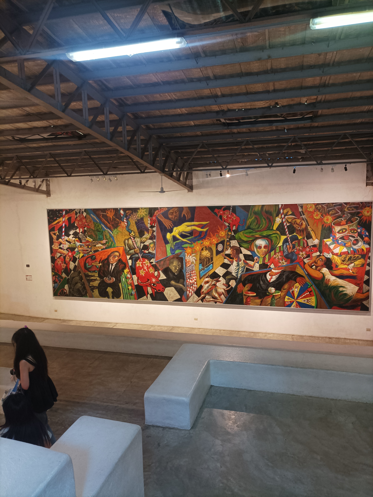

 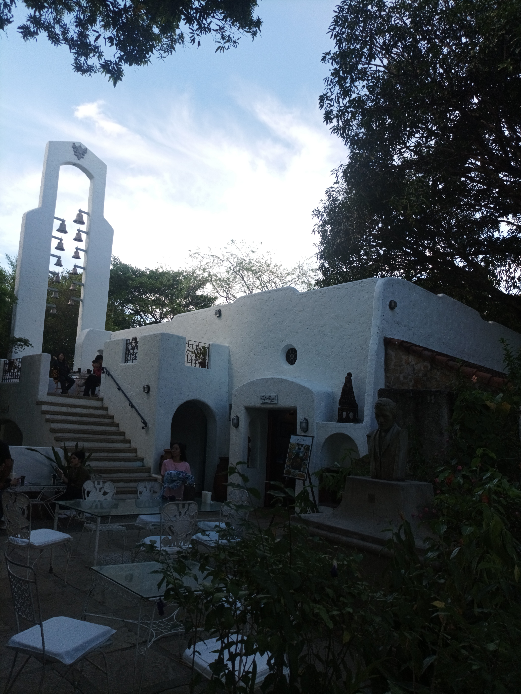
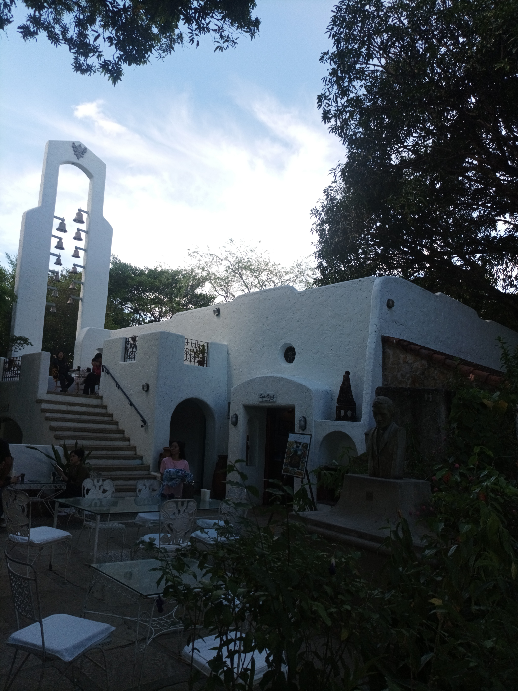
Hinulugang Taktak
View LocationHinulugang Taktak is a rich contributor to the cultural heritage of the City of Antipolo. It also has deep historical roots — according to the local legend, just think about its name that translates to "where the bell was dropped." It's fascinating how a scene of nature carries on such a great deal of story behind it. On top of that, it's a destination that offers experience with nature — considering you're a nature enthusiast — and a weekend bonding spot for families wondering which place to go. In general, it's a renowned natural park and waterfalls that have attracted visitors for decades. Hinulugang Taktak is a must-visit spot if you're in Antipolo.
Gallery
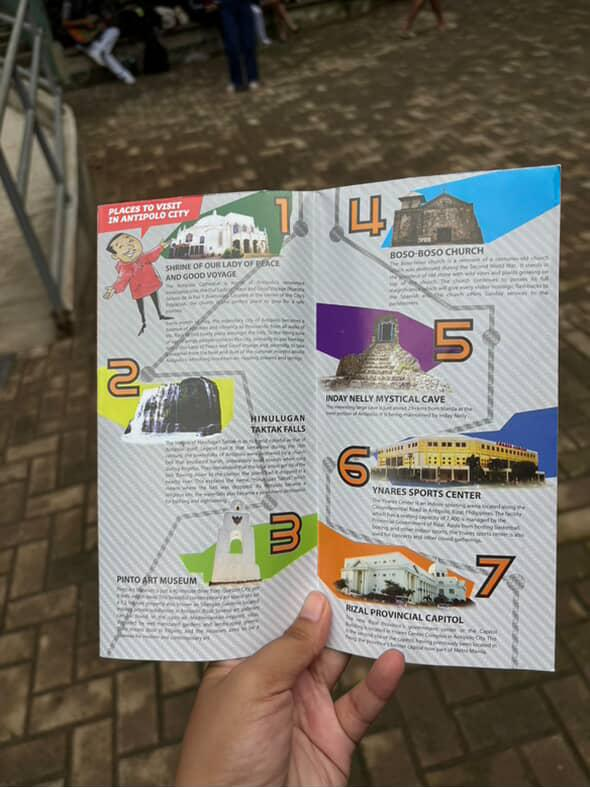 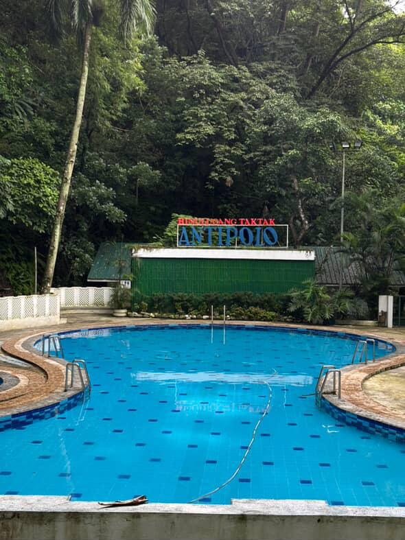 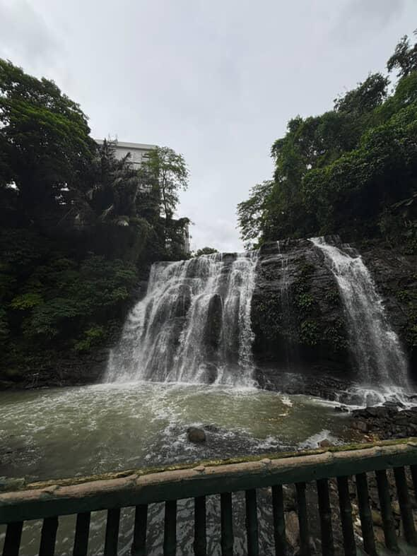 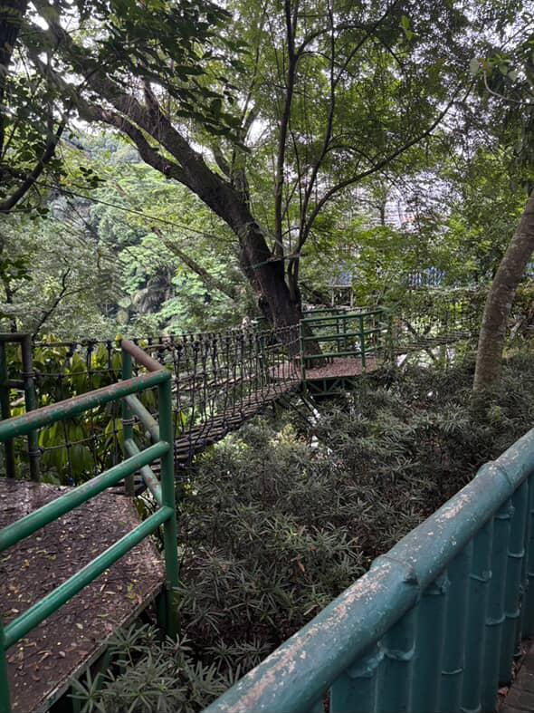 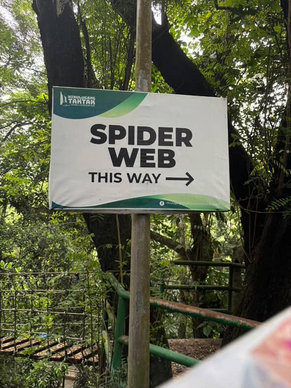Cloud 9
View LocationCloud 9 Antipolo is a famous attraction often labeled as a perfect spot for a quick and stimulating escape from the Metro. It's a city skyline in Antipolo, famously known for its 360° viewing, hanging bridge, and stunning cityscape view. It's a worthwhile destination for a casual visit, and a thrilling adventure awaits you. The climb up with the hanging bridge is such an exhilarating escapade — every step is worth it, for its exchange is a breathtaking panoramic view of the city area, including the Metro Manila cityscape in the distance. Up there, it gives me a perspective feeling — to take things slow; progress doesn't have to be quick, just feel every moment — feel it like you're in cloud nine.
Gallery
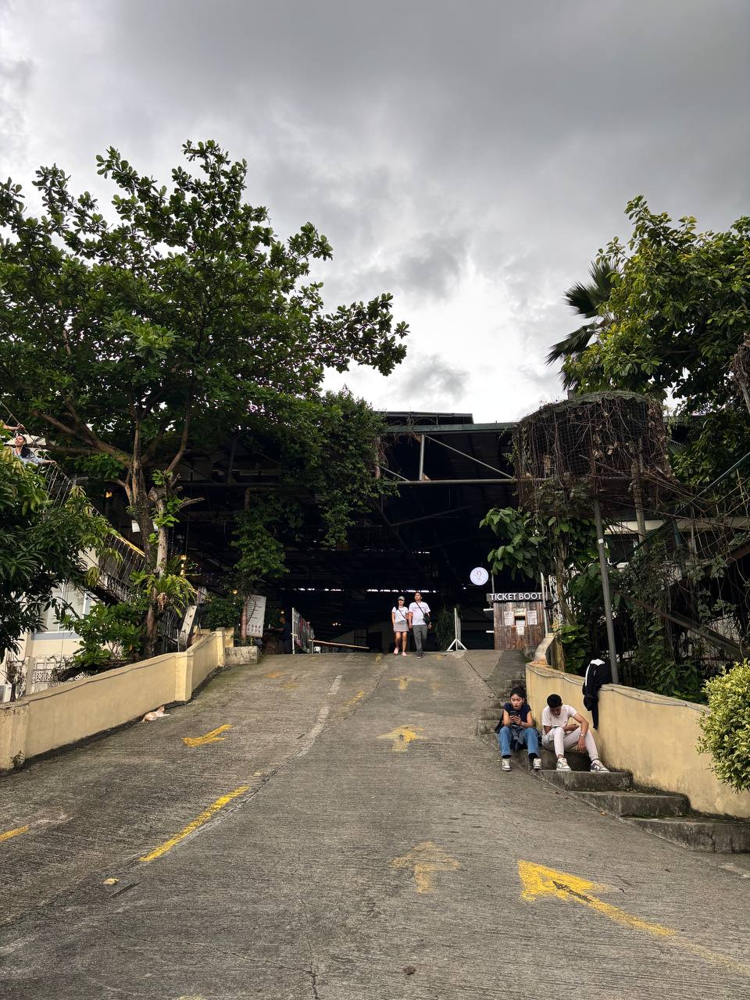 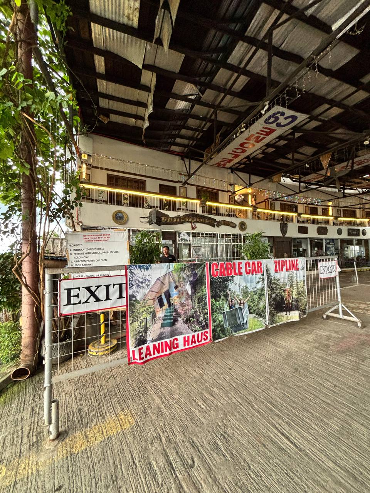 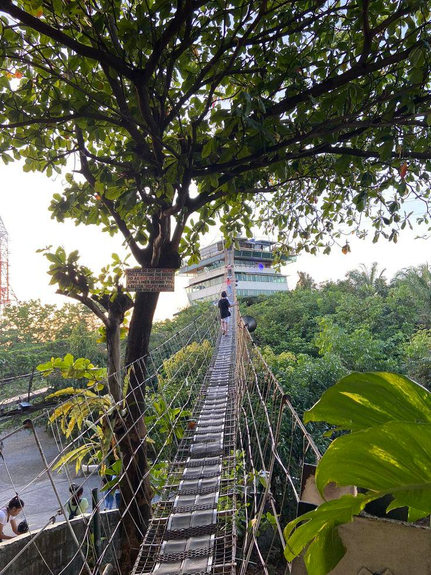 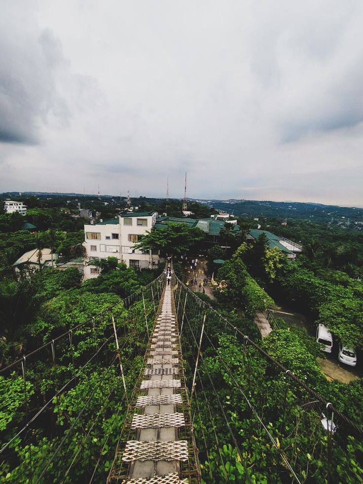Caza Peregrine Resort & Restaurant
View LocationA nest-like place hidden in the cool hills of Antipolo, Caza Peregrine is a dining spot secluded from the city lights yet close to the warm embrace of nature. They serve delicacies typically found in Philippine cuisine, desserts that will make you delighted, and hot coffee or chilled drinks — perfect for a sip. It's a perfect dating spot for couples that are not fans of crowded places. In the morning, the early birds get to feel the above - the - clouds experience as the clouds cover the land and witness the astonishing sunrise. At night, it gives you a romantic atmosphere, the solemn ambiance filling the occasion. It offers exceptional calmness so that whether you come for the view, the food, or the company — you'll always leave with a lighter heart.
Gallery
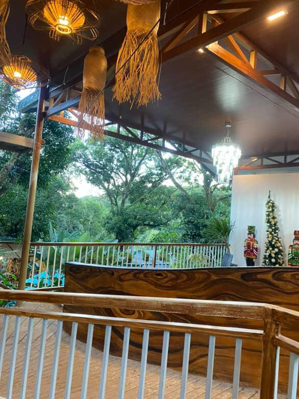 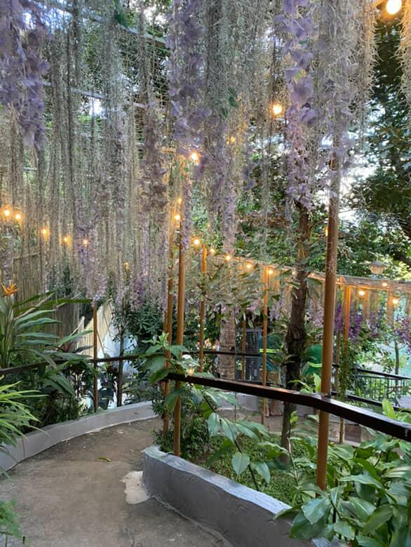 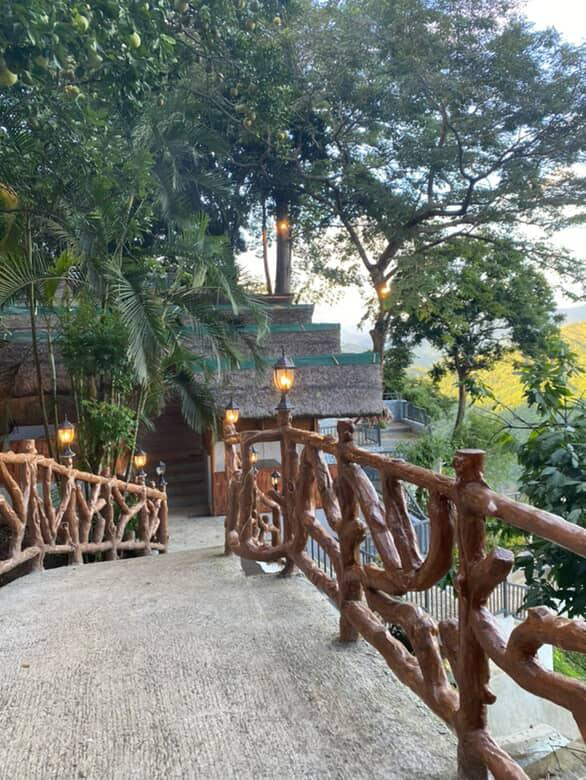 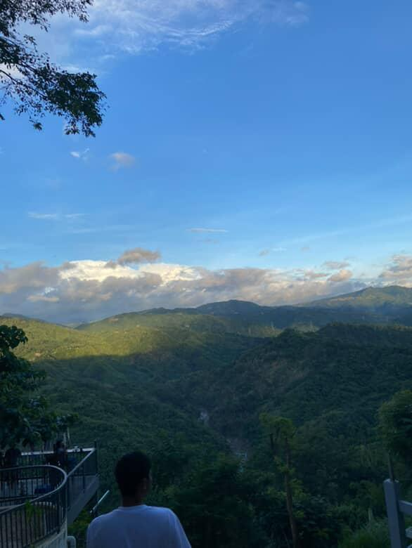About Us
Travel Team
Adrias, Mark E.
Videographer
My hobbies are watching movies, listening to my favourite music, and playing online games.
Espinosa, Ivan S.
Videographer
I love travelling and listening, playing online games like ML, and I also play Basketball.
Manangan, Paul Christian C.
Videographer / Photographer
Exploring the field of photography while fueling myself with coffee in travelling.
Familaran, Myra
Videographer / Photographer
I enjoy having a quality time for my family and sometimes travel with friends
Dela Cruz, Anika Chloe
Videographer / Photographer / Editor
My personal interest is video editing and videography because they give me the chance to be creative while telling stories through visuals.
Dela Cruz, Iya Nicole A.
Videographer / Photographer
I enjoy watching tiktok to relax, I love traveling with my boyfriend to discover new places and experiences, and my favorite hobby is enjoying good food.
Cepe, Angel Ann M.
Videographer / Photographer
I enjoy cooking at home for my family and spending time together over meals.
I also like watching movies to relax and explore different stories.
Development Team
Faustino, Vernice Lawrence M.
Head Developer
My hobby is playing online games, such as Valorant and ML, and I occasionally watch movies when I want to.
Padilla, Roice Jonel F.
Creative Writer
I'm a chronically-online person. I watch animated shows as pastime — Adobo is my comfort food and I'm into RnB kinds of music.
Berdin, Brayan Jay M.
Assistant Developer
My hobbies are playing basketball and also playing onlines games, and watching my favorite movies
Patiman, John Ver D.
Assistant Developer
In my free time, I usually enjoy reading books or watching movies. Playing video games is also one of my hobbies.
Vergara, Reymond P.
Assistant Developer
I enjoy listening to music, playing online games at night, and keeping life simple.
Message Us
If you have any questions or suggestions, feel free to reach out!